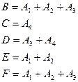
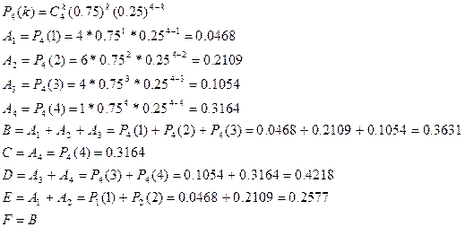

Тема: Схема Бернуллі для послідовності незалежних випробувань.
Мета роботи: Навчитися застосовувати формулу Бернуллі:
Прилади і обладнання: комп’ютер.
Розрахункові формули:
Хід роботи:
Завдання: Студент знає m із n питань програми. Кожен екзаменаційний білет містить чотири питання. Знайти ймовірність того, що:
Визначити найбільш імовірне число питань із білета, які студент знає.
m=75 n= 100
p=0.75 q=0.25

Найбільш імовірне число питань із білета, які студент знає:
Висновок: Виконуючи цю практичну роботу я навчився застосовувати формулу Бернуллі.